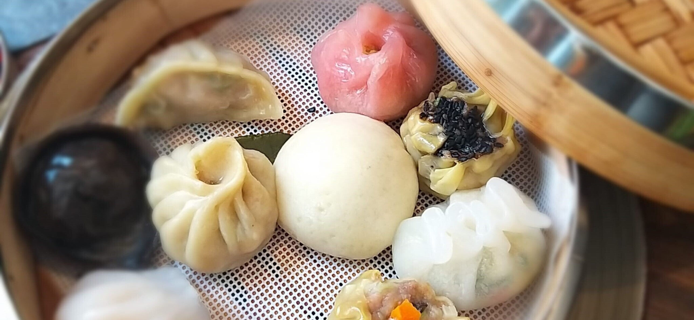

48 Avenue de la Faïencerie
L-1510 Luxembourg — Limpertsberg
+352 46 21 47
Instagram @bozaifanluxembourg
Bo Zai Fan 煲仔飯 · Limpertsberg, Luxembourg

48 Avenue de la Faïencerie
L-1510 Luxembourg — Limpertsberg
+352 46 21 47
Instagram @bozaifanluxembourg